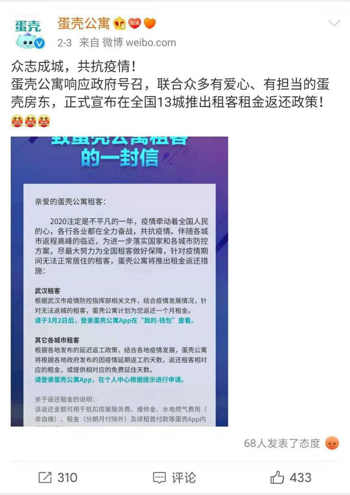
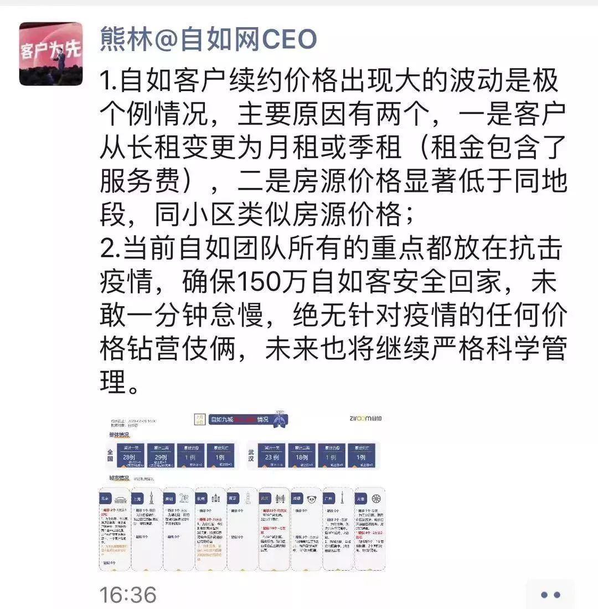
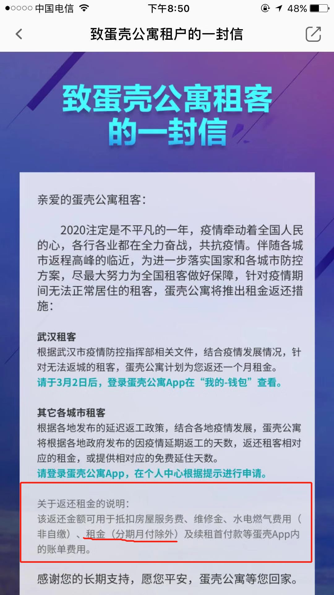
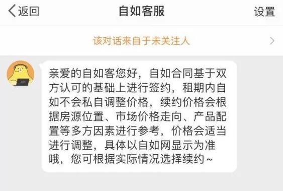

疫情之下，蛋壳自如为何吃相难看？
原文链接 备份链接 《创新经济战疫计划》，是燃财经在新型肺炎疫情期间推出的特别栏目，关注创新经济企业遇到的新难题、商讨应该采取的新对策，希望能够帮助中小企业一起战胜挑战、把握机会。 作者 | 苏琦 编辑 | 魏佳 “如果没法续约，我难道 …


文/周雄飞
编辑/大风
据锌财经了解，从1月31日开始，武汉、北京、杭州和深圳等地很多与蛋壳公寓签约的房主都接到了蛋壳官方的“拜年”电话，并且被通知：由于疫情影响，响应国家号召，要免去一定时间的房租。
还没等到接话询问，对方就已经挂了电话，再打过去不是占线就是无人接听。
与此同时，蛋壳公寓在官方微博上发布了一个“租金返还政策”，该政策表示将对于武汉市的租客进行1个月的租金返还，同时对于其他城市的租客按照延期返工的时间返还相应天数租金。

蛋壳公寓官方微博上的“租金返还政策” 图源网络
然而，大多数租客对此并不知晓，反而一些人在交完租金后才知道此事，打客服电话进行询问未果。
一时间，蛋壳公寓的“两头吃”做法在房东和租客们的抗议声中被“送”上了微博热搜。
就像说好的一样，自如在前两天也被曝出趁疫情期间租客不便搬家换租，肆意哄抬租金。此消息一出，虽然官方作出解释，但仍在众多自如租客的愤怒下，让其继蛋壳之后登上热搜。

自如CEO熊林就“租金涨价”进行朋友圈解释 图源网络
就这样，蛋壳公寓和自如左手做着“公益”抗击疫情，右手却把钱往自己口袋里装，在这一系列花式操作下闷声发着“国难财”。
而最后为其买单的，却是这些深受疫情影响的房东和租客们。

被通知的免租
“蛋壳打电话过来，说由于疫情影响，为了补贴无法返程居住的租客，要免去我3个月的房租，态度很强硬，完全就是一种通知。”
“当时心里就只有愤怒和不知所措。”聂女士对锌财经表示。
之所以会有这样的心情，是因为这份房租对她来说很重要。因为在每月的房租拿到手之后，聂女士还得在用工资贴一部分钱才能够还得起每个月的房贷支出。更重要的是，如果真的执行免租，那就意味着之后的三个月她收不到一分钱。
对此，聂女士多次拨打蛋壳客服，但一直被告知要排队，没有办法的她只能向武汉的一些政府平台进行投诉，“如果在疫情结束后，蛋壳不给我房租的话，我会选择报警”聂女士这样说。

房主与蛋壳公寓的聊天记录 图源受访者
其实，这样的遭遇不仅发生在像是聂女士这样的武汉房主身上，在北京和杭州的很多业主也表示遇到了同样的事情。
王女士是北京的一位房主，在2月4日她也接到了蛋壳公寓的电话，对方在电话中表示由于疫情“不可抗力”的影响，房子处于空置期，因此将要免去一个月的房租。
听到这些，王女士就立即表示了不同意，但还没等她说完对方已经挂掉了电话。“当时真的很愤怒，这等于说同不同意都得执行。”随即，她了解到自己的房子并不存在空置。
于此，王女士再次拨打蛋壳的客服电话，“要么是打不通一直占线，要么就是各种推诿最后挂掉电话。”而在当时，很多房东已经在网上在反映和控诉蛋壳公寓，表示蛋壳公寓在“套路”房主——恶意免租欺骗房主，一时间上了微博热搜。
蛋壳公寓或许为了维稳，在2月7日给全国房主群发了一条短信，其内容表示：对于近期网传的蛋壳公寓“套路房东”等传言纯属谣言，请您不信谣不传谣。

受访者发过来的短信内容 图源受访者
和其他房主一样，杭州房主莎女士也收到了这条短信。“当时看到这条短信时，就感觉像吃了苍蝇一样恶心。”这是因为她在之前同样接到了蛋壳的电话，通知里除了免除房租之外，还告知租金将会延迟一个月打到账户中。
对此，锌财经立即向多位房东进行求证，最后的答复都是一致的。
除此之外，据锌财经了解，在众多房主中还有很多人并没有接到蛋壳的电话，就直接被免去了房租。“如果不是我告诉我姐姐，她还不知道免租这件事，还在傻傻的等着房租。”
然而，让这些房主更没有想到的是，他们被迫献出的这些“爱心”，并没有真正落实到租客身上。
相反，租客们还在往外掏钱。

在“减免”与“涨价”中进行收割
对于租客的“收割”上，蛋壳公寓和自如可谓是都打了一手“好算盘”。
2月3日，蛋壳公寓官方微博更新了一条动态，内容是一个“租客租金返还政策”，该政策表示将对于武汉和其他城市无法返程的租客进行针对性的补贴方案。与此同时，在其App中也上线了该政策。
蛋壳公寓App首页上的“租客减免通知” 图源受访者
但是，经过锌财经的采访发现，大多数租客表示对该政策并不知晓，并且还“准时”收到了蛋壳的催租短信并交了房租。
小文就是这样一个租客，“2月3日我收到了催租短信，在交完租之后才听朋友说才知道了这个方案。”小文对锌财经说。她告诉锌财经，由于当时看中了蛋壳的装修风格就签了租房合同，期间住着感觉一直还不错，直到这次疫情看透了这家公司。
就在她知道这个返还政策后，就立刻进行了申请，却发现需要等到10号才能申请。于是，小文在10号上午再次进行申请，结果是申请成功，但返还租金需要等到3月2日才能到账。
然而，就在小文要关掉页面时发现了下政策中最下行的小字，上面写着“返还租金（分期月付除外）”。“看完这行小字，就意识到这个返还的租金我并不能以租金方式使用，真的气死了。”

政策中的隐形限制 图源受访者
对此，锌财经求证了蛋壳的一位内部人员，他表示这次的返还租金是无法适用于抵扣月付租金的，只能用来抵扣其他费用。这也意味着，这次的租金返还对于大多数选择月付的蛋壳租客来说，是一个隐形的限制。
李圆同样也是一个倒在这个限制前的租客。
“要不是要在App上续租，这个返租政策，我怕是这一年都看不到这个东西了。”经过多次的申请后，最后她得到了“不符合申请条件”的结果。
而让她更加气愤的是，在和蛋壳管家进行沟通后，对方表示续租如果选择月付，服务费和租金都会上涨；而年付，费用不会上涨。“这就是怂恿我多掏钱，当时干脆的选择了月付，大不了多掏钱点，等找好房子就搬走。”李圆这样说。

受访者与蛋壳管家聊天记录 图源受访者
在续租这件事上，小方也遇到了同样的情况，但不同的是，公司换成了自如。
小方是北京的自如租客，她原本准备在2月到期换房子，但由于疫情无法回去，所以只能选择续租，同样在与管家沟通中，她了解到如果现在要续租，那么房租将会上涨3%。
对于房租上涨原因，管家解释称“新价格为根据市场行情制定”，这个说法同样可以在自如客服那里看到。但根据链家数据显示，以北京为例，今年1月平均月租金82.84元/平方米，环比微增1.68%，但比去年1月下降2.9%。

自如客服回复“租金涨价”一事 图源受访者
这也就是说，自如的这波续租涨价是不合理的。
虽然这样，但最后小方还是选择了续租。“当时就觉得就是在发国难财，但没办法，这个时候找房子也不现实，只能继续签约一个月。”小方对锌财经无奈地说。
从蛋壳公寓通知房主免租、再到自如、蛋壳对租客的“双双收割”，就此完全坐实了发“国难财”的罪名。对此，一些房主和租客除了愤怒和失望，同时也想着一个问题：
在这样的疫情下，这俩公司还这样做，是真的在作死吗？

吃相难看的“两只鸵鸟”
“鸵鸟遇到危险的时候，会把脑袋埋进土里，以便自认为已经脱离险境。”
这个现象最早是在《自然志》中提到的，放到现代一般来比喻自欺欺人的人或事。而在此刻，蛋壳公寓和自如像极了把头埋进土里的两只鸵鸟。
自事件发生到网络上舆论发酵，这两家长租公寓官方基本上没有做过什么像样的解释和表态。虽然自如CEO熊林在2月10日在其朋友圈中对于续租涨价进行了解释，并且将这个解释同步到了自己的微博上，但租客表示并不接受，由此很快就自行删除，之后再无任何解释。
相比于自如来说，蛋壳官方做的更是干脆利索。打开蛋壳公寓官方微博可以看到，最近的一条微博还停留在2月10日，之后再无任何解释。

蛋壳公寓和自如官方微博 图源网络
就这样，这两只鸵鸟都把头埋进了土里，纵使舆论怎么走向，都好像和他们没有关系，并露出了一副“我就这样做了，你能拿我怎么着？”的态度。
一个问题就出现了：蛋壳公寓和自如作为长租公寓这条赛道上的头部企业，而前者在1月27日刚在纳斯达克上市，为什么会在这样的一个时刻来走这样一步险棋？
对于这个问题的答案，或许在蛋壳公寓的上市招股书中可以看出一些端倪。
据招股书显示，蛋壳公寓在2017到2019年前9个月的营收一直是正的，但亏损也同样存在。招股书显示，2019年前9个月，净亏损为人民币25.16亿元，2018年同期为净亏损人民币8.13亿元。
同时，还有一个地方需要注意，据招股书显示，2017年、2018年和2019年前九个月，蛋壳公寓使用“租金贷”的租客占比分别为91.3%、75.8%和65.7%。
这就意味着蛋壳公寓的主要营收是来自于“租金贷”，而对于“租金贷”的危害，其实从去年纷纷暴雷的长租公寓品牌的暴雷中就可以看到。
由此，在去年12月，六部委印发《关于整顿规范住房租赁市场秩序的意见》，要求住房租赁企业租金收入中，住房租金贷款金额占比不得超过30%。从招股书中的数据来看，蛋壳公寓“租金贷”比例远超于国家“红线”标准。
因此，蛋壳公寓虽然已上市，但需要补的漏洞还是很大，这点今年年初就已呈现出来。
今年1月，脉脉中就有人曝光蛋壳公寓疑似变相裁员，员工工资只发放北京最低标准的1500元。而对于此事，锌财经向蛋壳公寓的内部人员求证，对方表示并没有这回事。
蛋壳已是这样，对于同样使用“租金贷”的自如来讲，虽然“租金贷”比例并没有蛋壳高，但去年也身陷“甲醛房”“黑中介”等舆论中无法自拔，所以日子可能并不比蛋壳公寓好过多少。
但即使这样，也不是这两家公司可以做出如此“吃相难看”事情的理由。“抗击疫情，应该是全社会所有成员都应该做的事情，而像蛋壳公寓和自如在此期间只关注商业逐利，而不承担社会责任，这样的做法是非常不合理的。”房产行业分析师房小旗对锌财经这样说。
事情发展到现在，对于蛋壳公寓和自如“捞完钱不反应”的作为，很多房主和租客们表示正做着相应的工作来为自己的权利进行维权。据锌财经了解，北京、武汉和杭州等地的房主们已经建立了相应的维权群，并已做好了打官司的准备。
蛋壳公寓房东维权群 图源受访者
虽然现在并不能预测到这件事最后的结果，但可以肯定的是，蛋壳公寓和自如在消费者的心中的形象已荡然无存。而对于这两家公司来说，他们的原罪或许是忘记了一个事实：
“水能载舟，也亦能覆舟”这句话，也适用于消费者和公司。
（应受访者要求，文中王女士、莎女士、小文、李圆、小方均为化名）


原文链接 备份链接 《创新经济战疫计划》，是燃财经在新型肺炎疫情期间推出的特别栏目，关注创新经济企业遇到的新难题、商讨应该采取的新对策，希望能够帮助中小企业一起战胜挑战、把握机会。 作者 | 苏琦 编辑 | 魏佳 “如果没法续约，我难道 …
原文链接 备份链接 以下文章来源于燃财经 ，作者燃财经工作室 图片来源：Pexels 作者：苏琦 编辑：魏佳 本文来源：燃财经 （ID：rancaijing ） “ 年后本是租房高峰，因为疫情，流动性被锁死，公司只能打起了老租客的主意。 …
原文链接 备份链接 记者：吴波 “ 自如回应涨租是个例，但租客并不认同。 ” 因疫情在家办公的北京自如管家们，却出乎意料的比任何时候都更忙。 2月10日一整天，一位负责北京区域的自如管家，不断回复着自如客关于续租涨租的电话咨询。与此同时， …
原文链接 备份链接 Original 老九论财经 三联生活周刊 三联生活周刊 About Feature 一本杂志和他倡导的生活。 Today 在全国人民对抗肺炎疫情的战役中，很多人都在想办法贡献绵薄之力，但是一些浑水摸鱼的行为也开始浮出 …
原文链接 备份链接 经济观察网 记者 饶贤君 尽管北京市人民政府副秘书长陈蓓在2月1日表态，所有返京人员在接受了相应的医学观察和体温检测后，社区、村、物业部门，无权自行阻止返京人员进入小区，但返京租户的回家路依然面临阻碍。 自如、相寓等长 …